인구 현상과 인문사회 콘텐츠 1
인구 데이터, 인구 성장, 인구 분포
인구 데이터, 인구 성장, 인구 분포
개요

인구 현상의 유형 구분과 5대 주제
| 정적 | 동적 | |
|---|---|---|
| 프로세스(원인) | - | 인구 동태 인구 이동 |
| 패턴(결과) | 인구 분포 인구 구조 |
인구 성장 |
인구학적 인과-누적 매커니즘
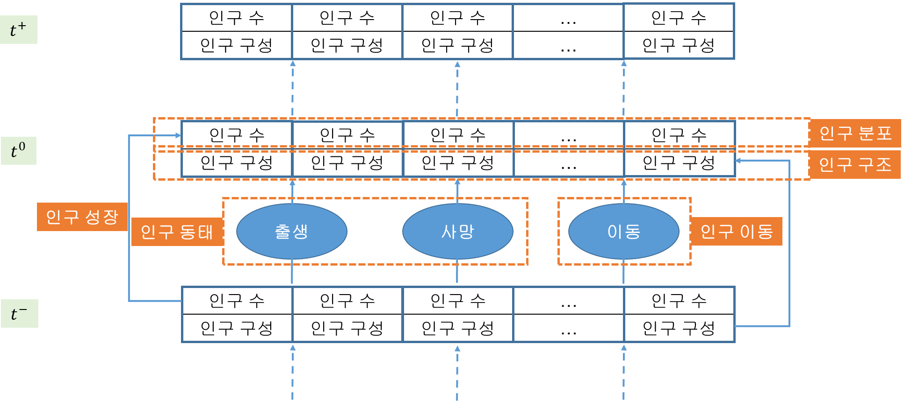
인구 데이터
인구 데이터와 나
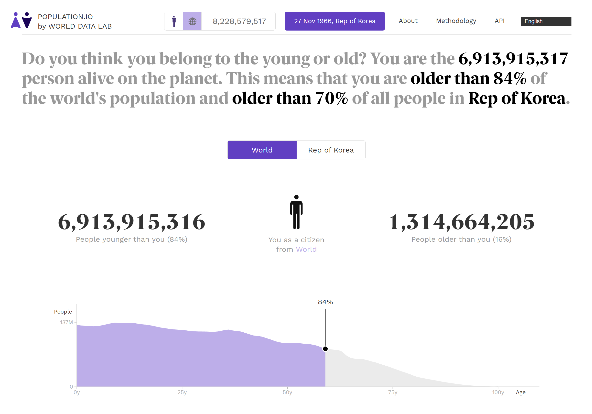
인구 데이터와 나
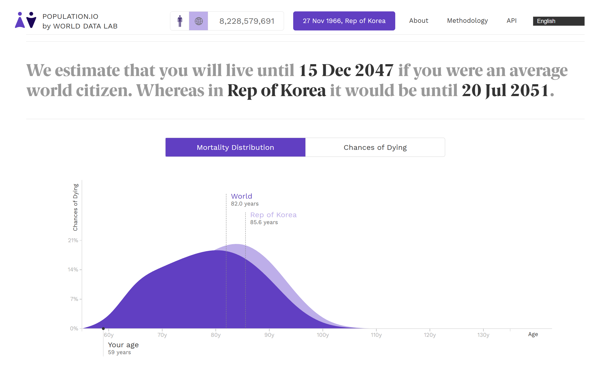
인구 데이터의 원천: 4대 원천
인구 센서스(census)
동태 통계(vital statistics)
행정 통계(administrative statistics)
서베이 데이터(survey data)
인구 데이터의 원천: 인구 센서스

인구 데이터의 원천: 인구 센서스

인구 데이터의 원천: 동태 통계
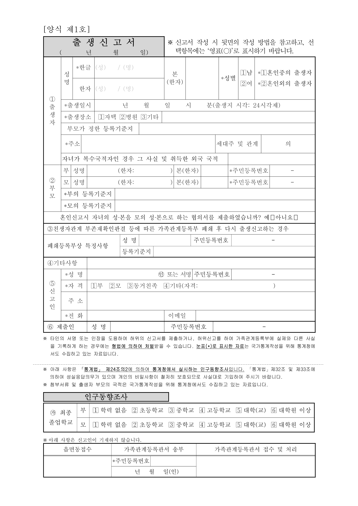
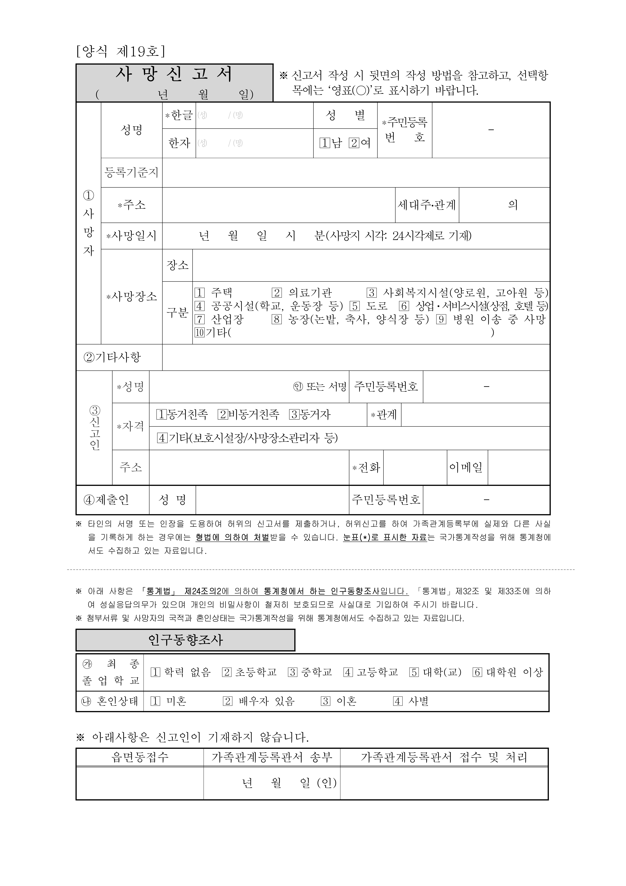
인구 데이터의 원천: 행정 통계
인구 데이터의 원천: 서베이 데이터

인구 데이터의 원천과 인구의 공간 귀속
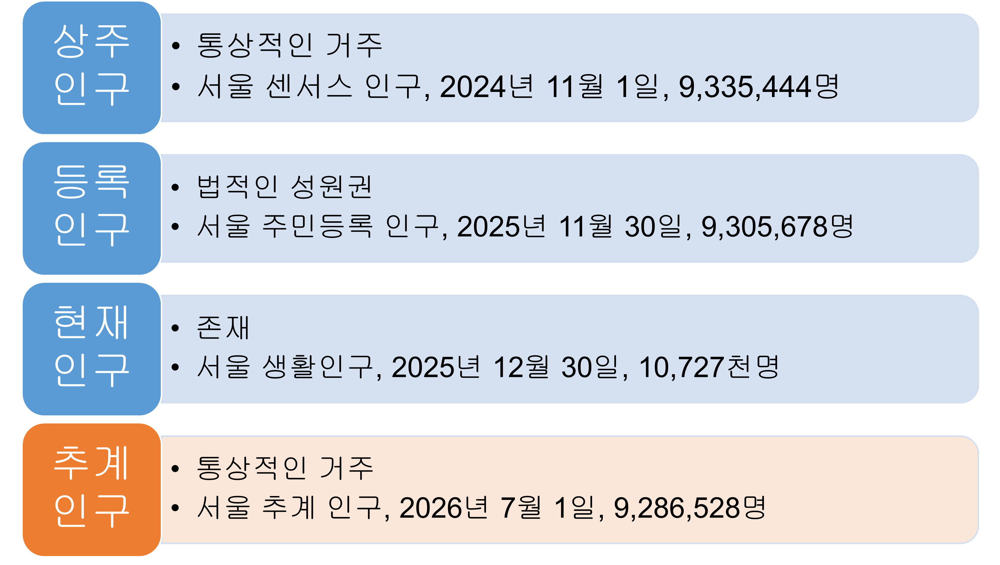
[KOSIS(국가통계포털)(https://kosis.kr/)]
[서울 열린데이터 광장: 서울 생활인구(https://data.seoul.go.kr/dataVisual/seoul/seoulLivingPopulation.do)]
인구감소지역 지원 특별법: 2023.1.1. 시행

인구 데이터: 세계
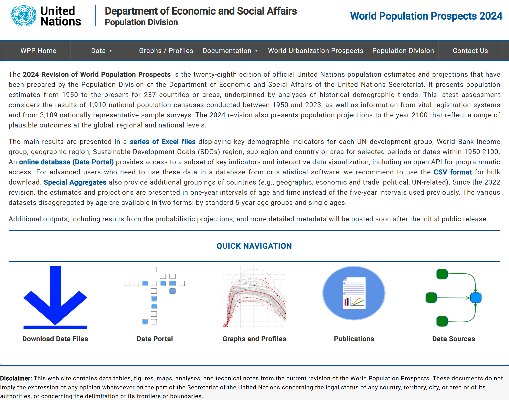
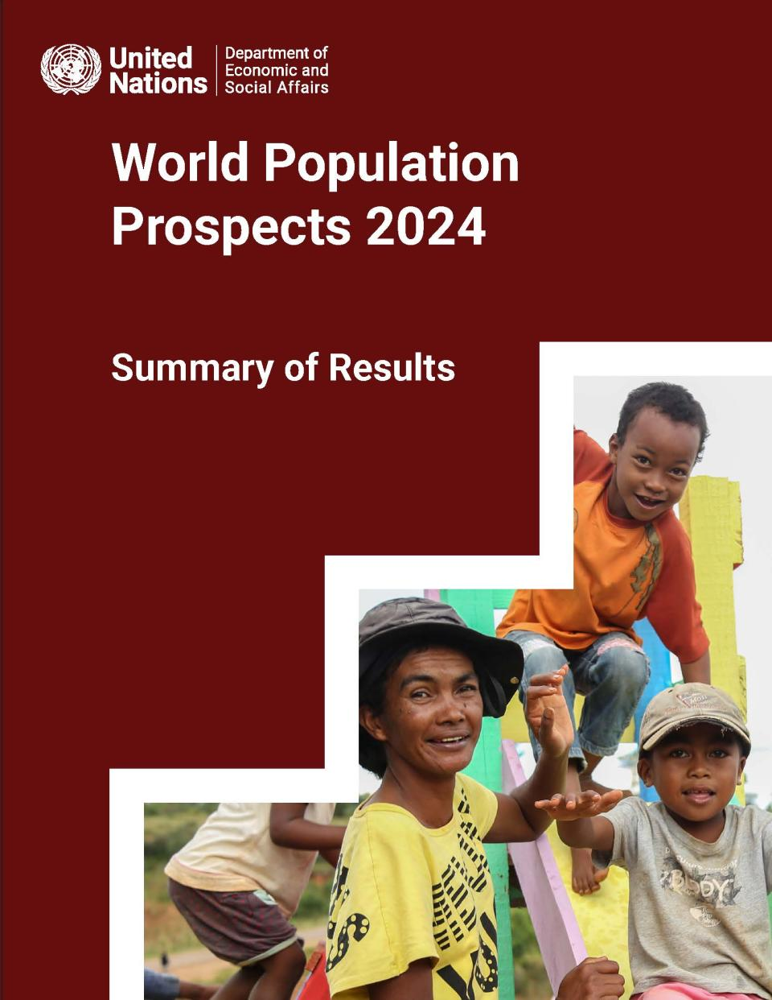

인구 데이터: 우리나라
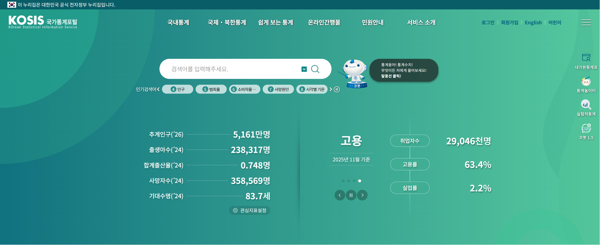
인구 데이터: 우리나라
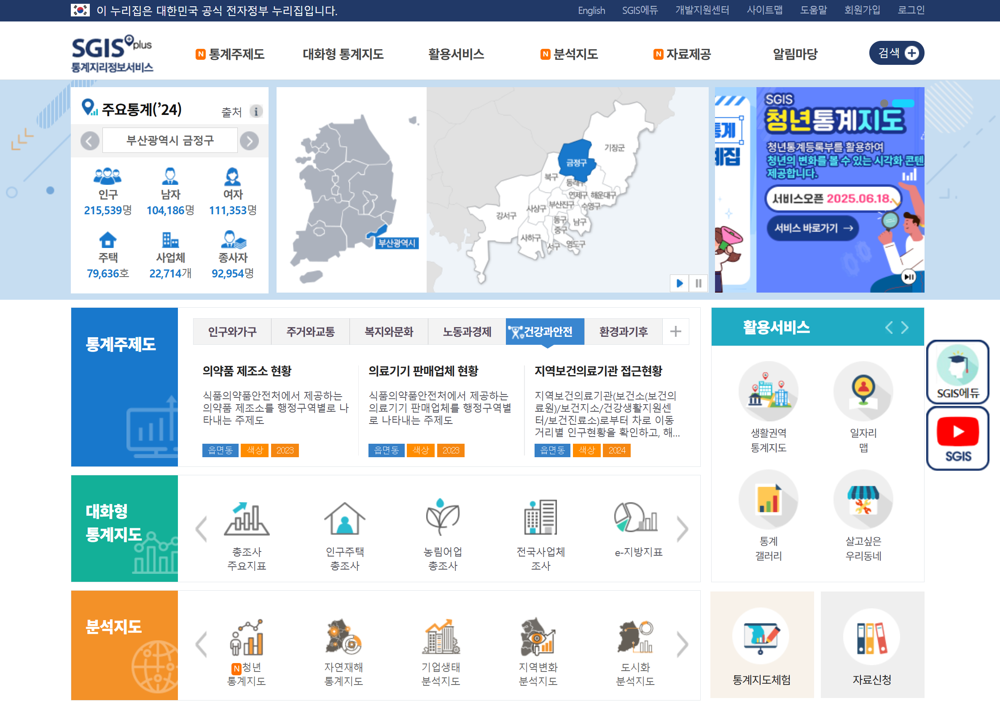
인구 데이터의 공간 체계
세계: UN 지오스킴(geoscheme)
Subregions: 22개
Regions: 6개
SDG (Sustainable Development Goal) Regions: 7
우리나라: 2025년 1월 1일 기준
시도 수준: 17
시군구 수준: 226개 혹은 229개
읍면동 수준: 3,560개
국가

Subregions: 22

Regions: 6
.jpg)
SDG Regions: 7
.jpg)
우리나라


(2025년 1월 1일 기준)
서울: 2024년 6월 30일 기준


(2024년 6월 30일 기준)
인구 웹 앱 예시
인구 성장
인구수의 변화 속도
인구 폭발 vs. 인구 절벽

인구 성장의 분해
인구학적 균형 방정식(demographic balancing equation)
\(P_t-P_0=B-D+I-O\)
\(P_t\): \(t\)시점의 인구
\(P_0\): 기준 시점의 인구
\(B\): 출생
\(D\): 사망
\(B-D\): 자연 증가(natural increase) -> 자연 변화(natural change)
\(I-O\): 순이동(net migration) 혹은 사회 증가(social increase)
인구 성장의 측정
인구성장률(population growth rate, PGR): 국제 표준
연평균 인구성장률 혹은 연평균 인구증감율
기간을 1년으로 환산했을 때의 PGR: 연간 인구 증가의 속도
자연대수법: \(P_n=P_0e^{rn}\) -> \(r=\frac{1}{n}\ln\frac{P_n}{P_0}\)
우리나라 2020~2024년 PGR
- \(r=\frac{1}{4}\ln\frac{51,805,547}{51,829,136}=-0.000114\) (-0.011%)
인구 성장의 모델: 인구변천모델
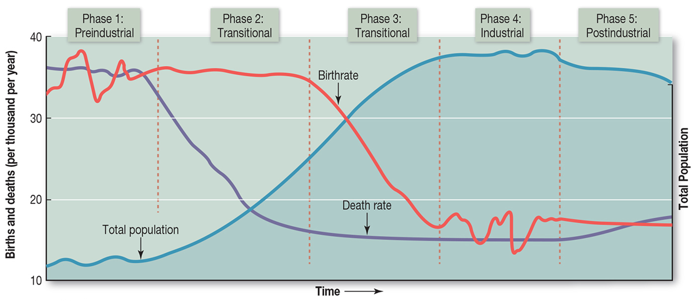
30977-6/asset/f149aba2-2b7a-4329-809a-b8f7e1ab7e8b/main.assets/gr10_lrg.jpg)
인구배당효과(demographic dividend)
‘인구학적 덫(demographic trap)’
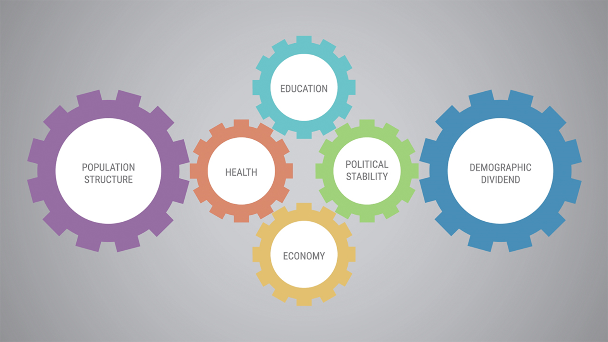
세계: 전체

세계: Subregions

세계: Subregions

세계: 국가
, 2025.jpg)
우리나라: 혼란스러운 데이터
우리나라의 현재 인구는?: 세 종류
인구총조사(2024년 11월 1일 기준): 51,805,547명
- 내국인 49,762,803명, 외국인 2,042,744명
주민등록인구(2025년 11월 30일 기준): 51,128,530명
- 외국인 등록인구(2025년 9월 30일 기준): 1,598,380명
추계인구(2026년 7월 1일 기준): 51,609,121명
- 2024년 공표(2022년 인구 기준), 1960~2072년, 인구센서스 기반
2010년 인구총조사 인구는 2개
기존의 직접 조사 방식에 의거한 인구: 48,580,293명
등록센서스 방식에 의거한 인구: 49,710,672명
우리나라: 전체

우리나라: 권역

우리나라: 시도

우리나라: 시군구


우리나라: 미래 전망

우리나라: 인구변천모델

인구 웹 앱 예시
인구 분포
인구수의 지리적 배열
세계: 그리드

세계: 그리드

세계: 위도

세계: 위도

세계: Region

세계: 국가

세계: 국가

우리나라: 시군

우리나라: 시군

우리나라: 인구의 편포성
.jpg)
우리나라: 인구의 편포성

우리나라: 인구의 지리적 중점

우리나라: 인구의 수도권 집중

우리나라: 인구의 도시 집중

우리나라: 지역 소멸
’지방소멸’의 개념
마스다 히로야(김정환 옮김), 2014, 지방소멸
- 일본 창성회의 의장
주요 내용
향후 30년 이내에 ‘대도시만 생존하는 극점사회’ 도래 예상
고령화 + 인구 재생산 잠재력 저하(젊은 여성의 부재) -> 지방소멸 가능성 증대
지방소멸가능성의 측정 및 분류
지방소멸위험지수 = 20~39세 여성인구 수 / 65세 이상 고령인구 수
분류
1.5 이상: 소멸위험 매우 낮음
1.0~1.5: 소멸위험 보통
0.5~1.0: 주의 단계
0.2~0.5: 소멸위험진입 단계
0.2 미만: 소멸고위험 지역
우리나라: 지역 소멸